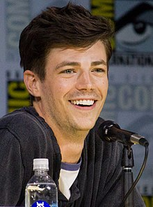

Grant Gustin is de hoofdrol speler van de serie, hij speelt Barry Allen.
Een assistent forensisch onderzoeker van de politie van Central City.
Momenten na een explosie bij de S.T.A.R. Labs deeltjesversneller, wordt Barry getroffen door de bliksem in zijn laboratorium en overgoten met chemicaliën die door het ongeval zijn aangetast.
Als hij ontwaakt uit een coma van negen maanden, heeft hij een bovenmenselijke snelheid.